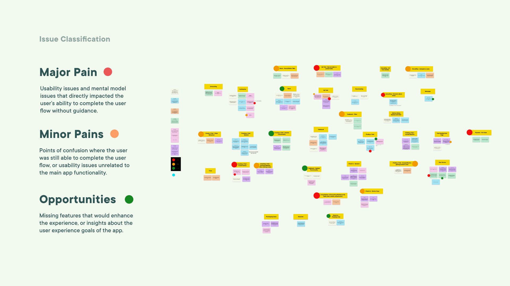

HelpMate is a community-based task finding app that provides an easy way for young people to connect with their communities while earning money or volunteer hours.
Successes
- Transformed complex use cases for two distinct users into intuitive user flows using personas and journey maps.
- Facilitated usability testing and results analysis resulting in immediately actionable insights.
- Created wireframes and interactive mockups using familiar interactions and information architecture

The Problem We Were Solving
For some demographics, such as people with disabilities and seniors, household chores can be an incredible burden. However, they may not have the money to hire a professional and/or feel hesitant about inviting a stranger into their home.
Initial Competitor Analysis
Our research showed that people are wary of using Craigslist for job postings due to trust issues with its sources. On the other hand, TaskRabbit's transactional system caters well to professional freelancers but may not be as appealing to the average person with some spare time.
This informed our 3 main design principles.

Design Principles
Safety + Trust
Unlike Craigslist, HelpMate is a user-verified service that allows both Helpers and Clients to see each other’s profiles and ratings. This ensures that both parties are aware of the other’s behaviours and instills a sense of assurance for the completion of a task.
Flexibility and Support
Students may find it hard to commit to a traditional part-time job due to fluctuating schedules. HelpMate’s scheduling flexibility allows Helpers and Clients to organize an task without the rigidity of a formal job.
Community
We believe there’s more to the relationship between Helpers and Clients than merely monetary exchange. HelpMate seeks to connect different individuals in the community through helping each other and encourages building relationships, and not only hiring someone to get the job done.
Working Through Complex User Flows
With two types of users, it was key to understand their unique needs to ensure our app is useful for them. For example, Joy (the client) wants to make sure that the Helper will get along with her parents when she's not there. On the other hand, Jordan needs flexible hours since he's a full-time student. In both cases, they want to make sure they're working with someone who's reliable and trustworthy.
I ran a whiteboarding session for a typical user flow through our app, which allowed us to narrow down our MVP right away and got us thinking about key interface screens and information architecture early on. This made it easier for us to diverge and re-converge when it came to ideating, and we were able to refer back to our shelved ideas later in our process once we had our MVP down.

Wireframing
Once we knew what kind of features were needed for our app, we began to visualize the interface. Our first set of graybox wireframes were quick and dirty, focusing on the information architecture and that movement through different pages felt natural. Once the foundation was set, we built on the specific visuals and interactions of each screen. By having a strong foundation from the start, we avoided having to make major changes down the road.
Design System
As we finalized our graybox wireframes, we considered the look and feel of our app. We wanted to emphasize the sense of community, which we achieved through the use of warm colours, inclusive illustrations, and softening corners of interactive elements. We created all of our reusable components as Figma symbols, allowing us to prototype with speed and accuracy.
User Testing
After many iterations, we validated our design with usability testing. We prioritized feedback using affinity mapping and Figma as our digital whiteboard. By staying organized, we addressed all the issues and even found some opportunities for improvement.

The Dashboard
Community
We wanted to help users find tasks that are in their neighbourhood. Our dashboard showed a map view, by default allowing users to see what's available nearby their location. Job postings show approximate commute times based on GPS, with shorter-distance methods chosen rather than cars or trains to encourage staying local.
The Chat
Community
One of the main interactions in our app is the chat function, which users are encouraged to use for everything from requesting a job to rescheduling and/or cancelling. Tasks are pinned to the top with clear call-to-actions to keep the conversation focused and provide easy access to the task details.
Task Progress
Safety + Trust
For their peace of mind, clients who can't be physically present at the task can choose to receive live updates of the task progress. A simple timeline with clear call-to-actions and states of completion makes it easy for both Helpers and Clients to stay on the same page. We were careful to choose check-in points that wouldn't interfere unnecessarily with the actual task.
Cancellation and Rescheduling
Flexibility and Support
HelpMate’s scheduling flexibility allows Helpers and Clients to organize an task without the rigidity of a formal job. Safeguards exist in the event of cancellation and rescheduling, with warnings at critical points to ensure that users can make the best informed decision.
Reflection
Designing an app with two distinct types of users was difficult at first, because it meant having to think through every single piece of functionality and interaction from two very different perspectives. When the users' goals aligned, it was smooth sailing. Yet other times, they were in direct conflict. It was certainly an exercise in learning to prioritize and assess the relative consequences versus benefits of prioritizing one thing as opposed to anther.
This was an incredibly extensive project, and there's tons of details I wasn't even able to cover in this case study so if you're interested, I welcome you to get in touch.